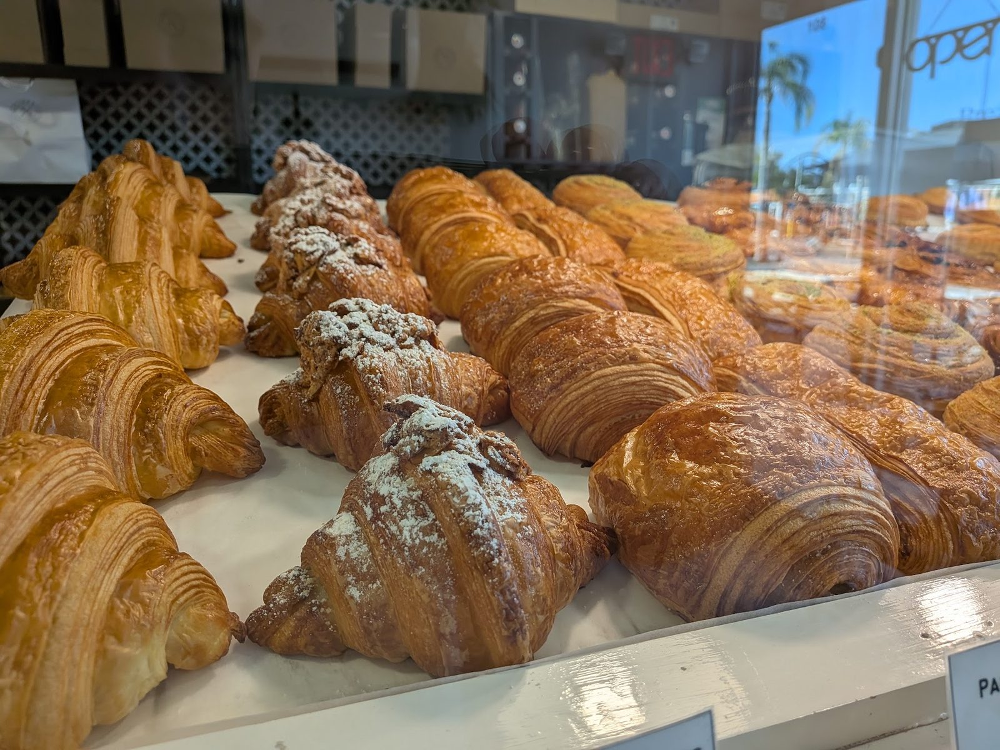
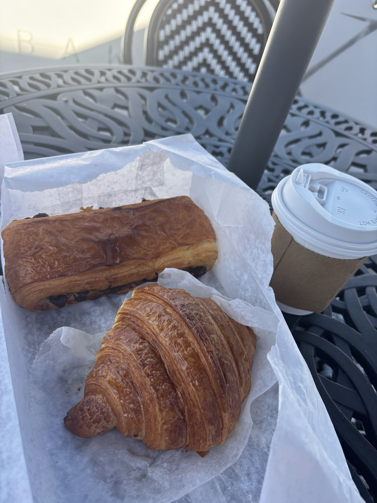
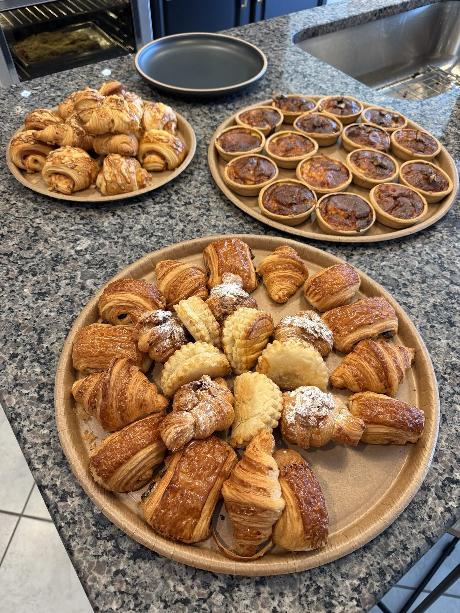

Bakery
French pastries of layered dough, baked over three days.
Bakery X · Land O' Lakes
Bakery-X serves Land O' Lakes from Wesley Chapel.
Bakery-X is based in Wesley Chapel and works with customers from Land O' Lakes. Call (813) 360-0886 to ask about timing and directions.
Baked over three days
Imported butter, cheese, macarons and French cookies are on the shelf too.

French pastries of layered dough, baked over three days.

Coffee, sandwiches and quiche, with a seat on the patio.

Baby showers, office breakfasts, open houses and brunches.
4.8 ★ · 535 Google reviews
I visited Bakery X and had a wonderful experience. The café has a charming French vibe, and the service was excellent, friendly, attentive, and welcoming. We ordered the pistachio croissant and the crème brûlée, and both were absolutely outstanding. The crème brûlée was smooth, creamy, and silky, with a perfectly balanced sweetness.
I absolutely love this bakery! ❤️ The service is always wonderful, and I’ve been a loyal customer since before they even opened their location at Krate. They have such a beautiful bakery with an amazing selection of delicious French pastries, breads, and other goodies. Everything I’ve tried has been wonderful, but their croissants are definitely my favorite!
I went there the other day and today I’m writing this review because I can’t get over the experience I had there. The atmosphere, service, food, place overall everything was just amazing!! I ordered the Pain Suisse and the Croissant Aux Amandes oh both were so so so delicious!🤤 I think I found my favourite spot!
Oh my. My new favorite place. Yummy quiche. Their dough is just fluffy and airy. Tasty! Latte is very good also. I appreciate that they open at 7am for the early risers😆.forgot about the beignet ! Aaaahhhh…
There are bakeries that produce beautiful pastries, and others that produce authentic pastries. Then there are the rarified few that remind you that craftsmanship is ultimately an expression of character. Bakery-X is in that rare air. My husband and I recently drove four hours specifically to visit this bakery. Having spent much of my youth in Switzerland and France, traveling by train to Paris, Lyon and Brittany, I developed an enduring reverence for French viennoiserie. It shaped my understanding not only of food, but of culture, tradition, patience, and mastery.
Open from 7 AM. Hours and directions are one tap away.